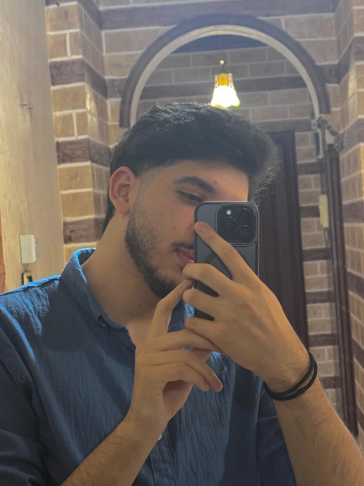

summary/objective

I am Fadi Ayyad, a computer information systems student at Yarmouk University in Irbid, a passionate student in my second year. I see myself as passionate about building and developing websites on their front and back interfaces. I see myself as a fullstack developer and cloud engineer. I aspire to reach the best day after day
Education
- Yarmouk University, Irbid, Jordan
- Bachelor's degree in Computer Information Systems
i will be graduated in 2028
Skills
- Programming languages: JavaScript, Python, Java
- Web development: HTML, CSS, React, Node.js
- Database management: MySQL, MongoDB
- Cloud platforms: AWS, Azure
Certifications
- Certified AWS Solutions Architect - Associate
- Microsoft Certified: Azure Fundamentals
- certified in front-end development